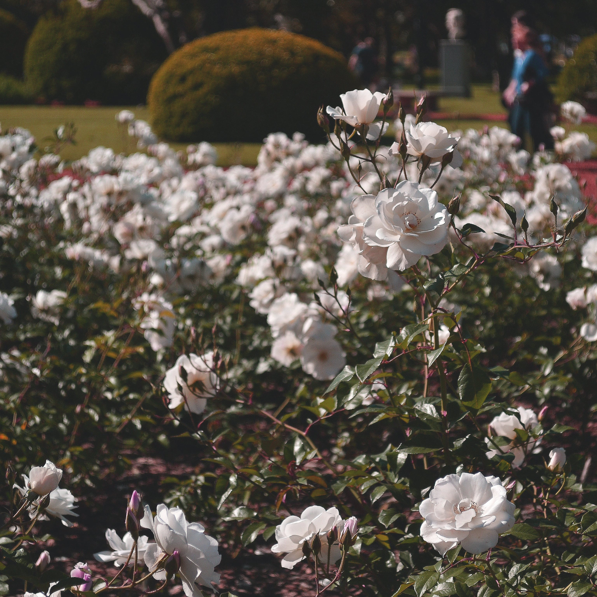
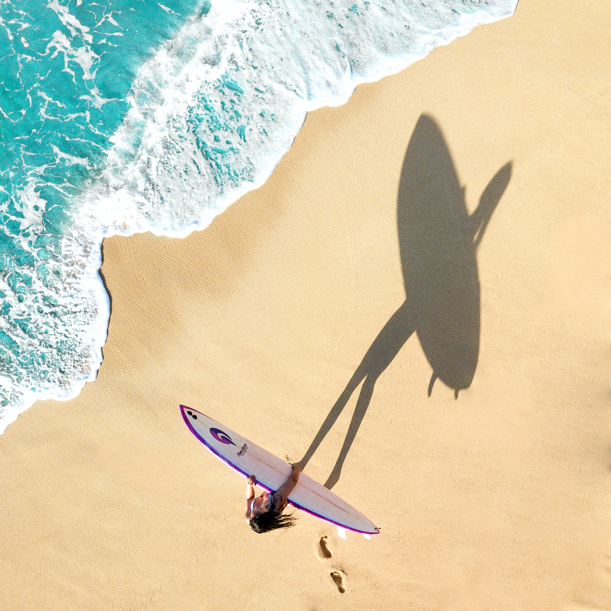

The website has some subtext that goes here under the main title.
It's a smaller font and the color is lower contrast.
Some Random Information.
This is Winter

This is Spring

This is Summer
This is Fall
"Rest is not idleness, and to lie sometimes on
the grass under trees on a summer's day, listening
to the murmur of the water, or watching the clouds float
across the sky, is by no means a waste of time."
–Sir John Lubbock
Call to action! It's time!
Sign up for our product by clicking that button over there!